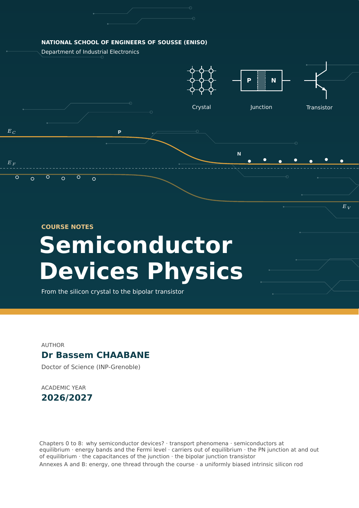

COURSE NOTES · ENISO 2026/2027
Semiconductor Devices Physics
From the silicon crystal to the bipolar transistor
Dr Bassem CHAABANE · Department of Industrial Electronics
The crystal
Transport, carriers and bands
- 0Why Semiconductor Devices? Goals, History and TechnologyPhysics as a tool · one material, many devices · the three cornerstones of the course · from vacuum tubes to nanometre transistors · how a chip is made
- 1Transport Phenomena: Drift, Diffusion and ContinuityCurrent density · the Drude model · Ohm’s law · thermal velocity · diffusion · Einstein relation · continuity equation · switching off a batteryTry it · Drift, diffusion and the Einstein relation
- 2Pure and Doped Semiconductors at Equilibrium: A Qualitative ViewObservations · bonds · electron–hole pairs · the hole · generation and recombination · n and p doping · hydrogen-like model · mass-action law · neutrality
- 3Pure and Doped Semiconductors at Equilibrium: Energy Bands and the Fermi LevelBonds recalled · free electrons · bands and gaps · metal, insulator, semiconductor · Fermi–Dirac · effective mass and density of states · n, p and ni · the intrinsic level · donor levels and ionisation · neutrality · the Fermi level against doping and temperatureTry it · From bands to densitiesTry it · The Fermi level against doping and temperature
- 4Carriers Out of EquilibriumEquilibrium, steady state, transient · return to equilibrium · light and photoconductivity · recombination mechanisms · electron and hole currents · continuity · diffusion length · an illuminated surface, from switch-on to steady stateTry it · The illuminated surface, from switch-on to steady state
The junction
Equilibrium, bias and capacitances
- 5The PN Junction at EquilibriumThe thought experiment · two pieces apart · the Fermi level is constant · contact and the space-charge region · conductor, charged insulator, conductor · the band diagram of the junction · the barrier reading · electrostatics and widths · the built-in voltage, two routes · carrier densitiesTry it · The PN junction at equilibrium
- 6The PN Junction Out of EquilibriumWhere the voltage drops · bands under bias · the four currents · the barrier reading · quasi-equilibrium and quasi-Fermi levels · minority densities at the edges · diffusion in the neutral regions · the Shockley law · short and long diodes · the characteristic · the bias scenario · photovoltaic effect · LEDTry it · The junction under bias
- 7The Capacitance Effects of the JunctionTwo stores of charge · the SCR under reverse bias · the transition capacitance · the 1/C^2 measurement · the varicap · the stored minority charge · the diffusion capacitance · the small-signal diode · switching a diode off · transistors and logicTry it · The two capacitances against bias
The transistor
The bipolar junction transistor
Annexes
Two threads through the course
- AEnergy: One Thread Through the CourseState and transfer · the zero of energy · hydrogen and negative energies · quantum states · from atomic levels to bands · the band edge · allowed and occupied states · where the energy goes
- BA Uniformly Biased Intrinsic Silicon RodEquilibrium · the bands tilt · boundary conditions at the contacts · continuity · drift and diffusion together · why the profiles are uniform · the drift current · quasi-Fermi levels